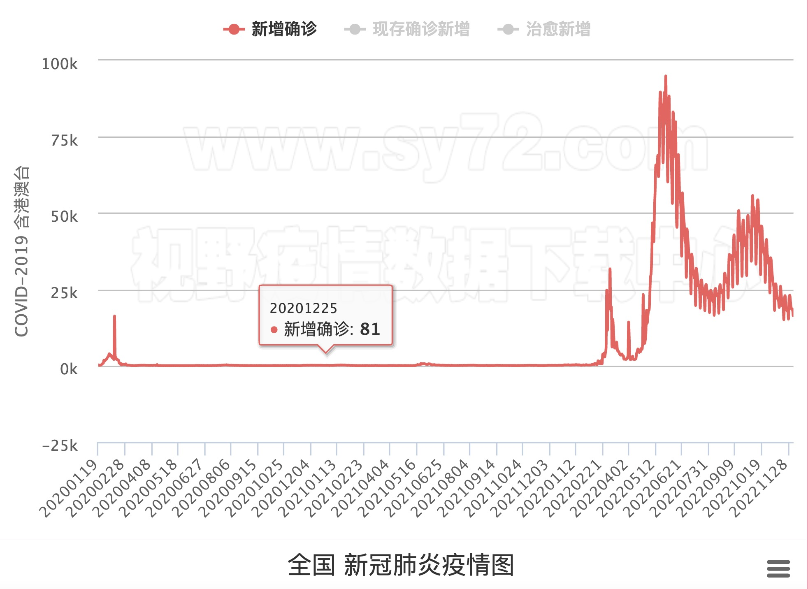

前言
新冠疫情的突然爆发，给各行各业带来极大变化的同时，也为许多学科的研究提出了新的课题。新闻传播学作为一门交叉学科，时常与社会热点紧密结合在一起，那么疫情的爆发，对我国新闻传播学的研究有什么影响呢？新传研究者对疫情的哪些问题更加好奇呢？本报道按照综合排序，采集了中国知网上有关“疫情”的新闻传播学论文1350篇，试图对以上问题进行解答。
发布时间
从发布时间来看，与“疫情”相关的新闻传播学论文在新冠疫情爆发前十分稀少，直到2020年2月，“疫情”才开始作为一门课题进入新闻传播学研究领域。值得一提的是，2020年4月和2021年6月是该话题论文产出的高峰期，而这两个时期恰好都出现了我国新增病例的快速增长，可推断疫情的严重程度与疫情话题论文的产出量具有一定的正相关关系。然而，进入2022年以后，尽管确诊病例仍有增长，与疫情相关的论文产出数量却并没有出现高峰，反而持续下降，呈现出“学术过气”的现象。
作者单位及收录刊物
从论文发布的作者单位来看，发文数量最多的前十名单位如下。其中中国人民大学新闻传播学院（13篇）、上海大学新闻传播学院（11篇）为发文数量最多的两所院校，除高校以外，一些媒体单位的从业者也参与了有关疫情的新闻传播学研究，如中央广播电视台（5篇）
从刊物上来看，《新闻研究导刊》、《青年记者》和《新闻传播》收录了数量最多的有关疫情的学术论文。
论文主题分析
将1350篇论文的题目进行分词，并统计每个词汇的词频，得到词云图如下。从论文题目上来看，“媒体”、“报道”等词汇出现频率最高，表明有不少学者就新冠病毒的新闻报道方式展开了研究。此外，“为例”一词所占比重较高，总共出现了272次，表明有很多论文是以案例分析的方式进行调查得出的。
从关键词来看，“疫情防控”是1350篇论文里最常见的主题（出现了98次），此外，根据关键词主题，可将论文专注的焦点划分为以下几个类别：
1. 有关新闻报道（包括“疫情报道”、“媒体”、“健康传播”、“主流媒体”、“新闻框架”等等），代表文章有：《中西方媒体报道各国疫情的对比及情感分析方法研究》（作者：陈雪松）、《《人民日报》新媒体矩阵的新冠肺炎疫情报道实证研究》（作者：陆窈，宁波大学人文与传媒学院）。
2.有关舆论（如“网络舆情”、“治理”、“网络谣言”、“舆论引导”等等）。代表文章有《“和声共振”：政务微博在重大疫情防控中的舆论引导协同研究》（作者：邓喆，清华大学马克思主义学院）、《重大突发公共事件的舆论生态与引导研究——基于新冠肺炎疫情传播的舆论生态与引导的反思》（作者：张彩霞，山东大学新闻传播学院）。
3. 有关新媒体（如“新媒体”、“社交媒体”、“微博”等等），如《从抖音短视频看后疫情时代健康传播的发展》（作者：王鑫茹，内蒙古师范大学）。